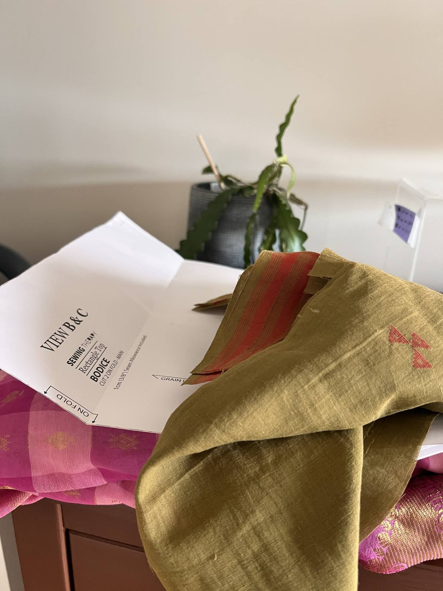
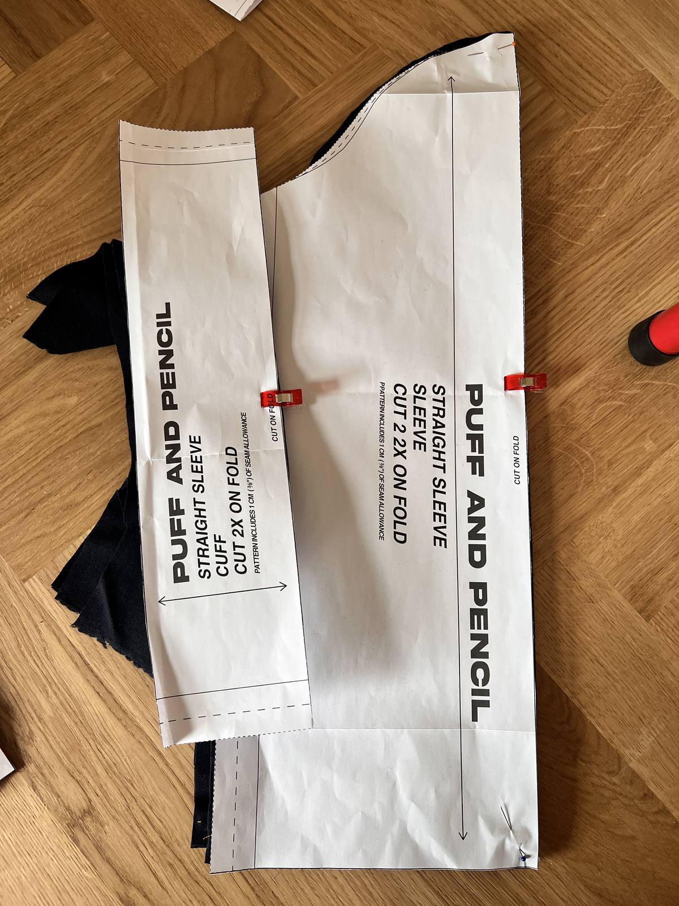
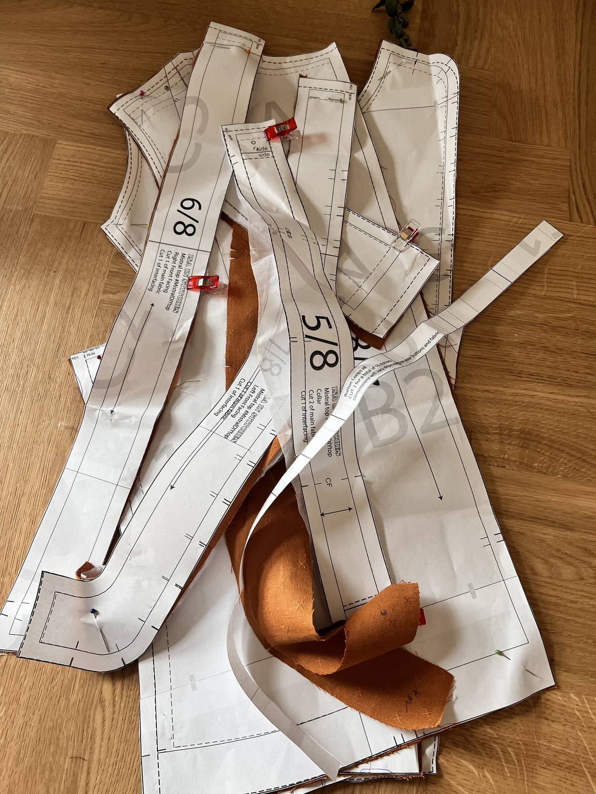

A messy week that was more admin and prep than it was about outcomes.
For some of my DIY projects — measuring, researching supplies and ordering them, took most of my time. 'Too many tabs open' might be my default state but its not one thats very good for me.
Decided to prep for some sewing projects by doing some batch cutting — this is the part I hate the most. The endless pre-sewing before the sewing. The literal back ache and anxiety that laying out fabric and taking scissors to it causes — ugh. I remind myself that I am doing this for fun.



Like running — you feel good when you are finished. During? It's anyone's guess. Sometimes its the runners high. Sometimes you aren't sure if you are going to throw up.
Inspired by Joy's writing, I did more creative writing this time. Here is some of it — packaged as a zine.
I spent a bit of time trying to make this digitally. But in the end went very analog — printing, cutting, pasting. It's definitely my happy place to work this way — in the middle of this lovely venn diagram of constraints meets ease.
I might improve on this version or I might not. Its nice to keep the option open instead of never finishing this because it doesn't align with my initial vision. (Nice to see I'm actually practicing this theme that I wrote about last time)
The theme in both of my art classes this week was about seeing the whole before you see the parts.
In animation we did very quick sketches of a live person who was moving about. And for these sketches you are meant to focus on the key lines of the person and the main 'action' i.e. whats moving. I found this incredibly hard.
At work, I am more likely than not the person focused on the big picture. If I can't zoom out enough to see what the problem is or what a set of insights look like, I can't make sense of it. I'm usually the one asking my team or clients to pull themselves out of weeds to see how things join up.
So it was quite the bruise to my self-image, to realise that when it comes to drawing i.e. truly observing/perceiving things, I get caught up in the details.
In a drawing class, the tutor went back to the very basics. I spent 2 hours trying to draw a passable circle and a cube. The technique for both, or pretty much anything, is the same — draw the simplest, roughest outline of the whole picture with simple straight lines before you start focusing on curves, details, shading etc.
When drawing, I do get caught up in the detail. A lot.
After these art classes, I realised, I do this in my work too. While I do focus on the big picture when it comes to understanding things, when creating outputs (decks, narratives, speeches) I do get caught up on the detail of things when I should be working on a bigger outline. And this habit isn't helping me. I have many instinctive workarounds — like outlining on paper or in nested bullets, away from slide decks that might distract me. But these have felt tactical.
Accepting this contradiction in how I see the world is helpful — I think big picture first but I do make things details first.
Unlearning this details-first habit, will make making things a lot less frustrating. Something to add to my practice.
I've been struggling to get into a routine with exercise and meditation so thats the focus for next week.
I've been feeling a sense of time slipping away. The answer is definitely not trying to do more things more frantically. So I'm going to practice intention and slowing things down deliberately.